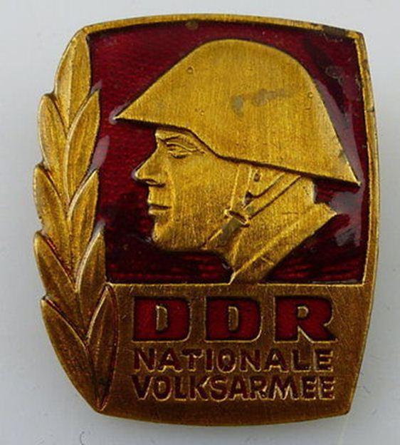
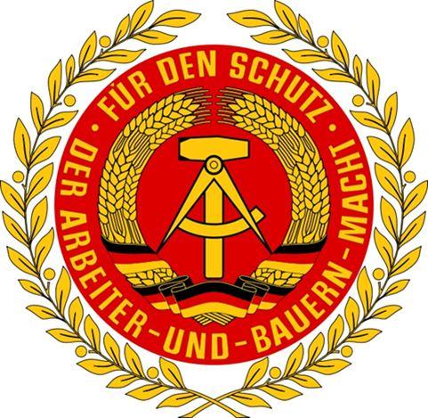
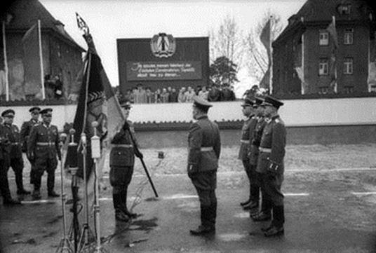

Pour remplir sa mission il faut à Jörg Schönbohm un centre de commandement pour y installer son état-major. Le 4 Octobre, 1990 on créa le Bundeswehr Kommando Ost. Ce commandement a été conçu pour une durée limitée et fut situé dans les locaux de l'ancien ministère du désarmement et de la Défense de l’ex-RDA à Strausberg avec du personnel de la Bundeswehr et de l'ex-NVA. Il était sous l’autorité directe du ministère de la défense. Son adjoint est le major général1 Werner von Scheven. Ce commandement englobait toutes les anciennes forces de l’ex-NVA, les unités en cours de formation et les nouveaux arrivants mutés.
Schönbohm devait créer de nouvelles structures selon le modèle de la Bundeswehr à Berlin comme dans les nouveaux Länder de l’est et pour cela il avait également besoin de cadres de la Bundeswehr. Environ un millier de militaires de l’armée ouest-allemande furent désignés pour servir en Allemagne orientale. Rares furent les volontaires et les résignés les plus nombreux. Il est à souligner que pour la première fois dans l’histoire de la Bundeswehr un général avait le haut commandement sur l’ensemble des éléments militaires de l’armée de terre, de l’air et la marine.
Une tâche difficile attendait Schönbohm. Conduire en douceur l'intégration des 90 000 militaires de l'ex-NVA et des 47 000 personnels civils2 à la suite des forces afin de réussir une déflation d'effectifs de façon à ramener les forces stationnées sur le territoire oriental de l'Allemagne à 50 000 hommes une partie de conscrits ne fut pas chose aisée.
Dans un premier temps les hauts commandements de l’ex-NVA furent dissous et les officiers généraux3 licenciés par une mise d'office à la retraite et tous les cadres et les hommes de troupe absorbés dans la nouvelle Bundeswehr. Les commandements de niveaux subalternes et de certaines unités furent confiés à des officiers en provenance de l'armée ouest-allemande.
En effet il était difficilement concevable de se passer totalement de l’expertise des personnels de l'ex-NVA, indispensables pour participer à l'inventaire de l'infrastructure4 sur le territoire de l'Allemagne orientale, au recensement des nombreux matériels5 et des innombrables dépôts de munitions. Il lui fallait aussi des interprètes auprès des 338 000 Soviétiques du Groupement des forces armées soviétiques en Allemagne6 qui restaient stationnés jusqu'en 1994.
La surveillance des nombreux sites sensibles et la manutention de matériel est-allemand inconnue pour les membres de la Bundeswehr, exigeait de recourir et de travailler dans l’immédiat avec les membres de l’ex-NVA. En outre la politique de réunification réclamait un signe fort en direction du peuple en mettant en exergue la fusion naturelle des deux peuples.
Dès les premiers mois environ 60 pour cent des membres de la NVA quittent volontairement la Bundeswehr7 car il est difficile de porter l'uniforme de l'ancien « ennemi de classe ». Les quelques officiers politiques, les soldats âgées de plus de 55 ans8 les officiers classifiés comme ancien collaborateur bénévoles de la Stasi, ainsi que les personnels féminins à l’exception du personnel féminin du service de santé, furent immédiatement licenciés.
Malgré des séjours d'adaptation au sein des unités occidentales des trois armées et des stages dans les écoles de la Bundeswehr qui furent organisés au profit des cadres de l'ex-NVA de nombreux militaires de l'ex-RDA manifestèrent peu d'intérêt pour la Bundeswehr. Beaucoup d'entre eux choisirent de bénéficier d'indemnités de départ plutôt que de risquer de se retrouver au chômage après la période d'essai de deux ans proposé par la Bundeswehr.
Par ailleurs, modelés par des décennies d'idéologie communiste, l'intégration d'officiers et de sous-officiers dans des emplois subalternes sous les ordres d'officiers de la Bundeswehr occidentale, l’ennemie d’hier, était impossible.
Enfin condition préalable à une intégration dans la Bundeswehr fut le contrôle de sécurité réalisé avec le concours du Commissaire fédéral pour les archives de la Stasi de l'ex-RDA à Berlin9 afin de connaître les éventuels antécédents dans les services de sécurité de l’état. Il faut noter que 90 p. cent du corps des officiers étaient membre du SED.
D’autres désirent néanmoins tenter leur chance et 6000 officiers,11 200 sous-officiers et 800 militaires du rang sont autorisés à servir durant une période probatoire de deux ans10. Militaires, ils servent dorénavant une organisation qui pratique les mêmes fondamentaux propre à toute les armées du monde la discipline et le respect de la hiérarchie. Pour beaucoup d’ex-soldats de la NVA, la fin de la désorganisation dû aux nombreuses réformes qui s’enchainèrent de manière confuse en RDA sont également le déclencheur de ce choix.
Mais rien n’est simple pour l’ancien frère ennemi. Il doit apprendre à utiliser et manier d'autres armes, de nouveaux équipements et découvrir un nouveau style de commandement comme la Innere Führung11 ; c’est toute une culture militaire qui est à revoir ! Les officiers sont généralement rétrogradés d’un à deux grades en raison d’un avancement plus rapide dans la NVA que dans la Bundeswehr et leur salaire ne se monte qu’à hauteur de 60 p. cent de celui de leur camarade de l’Ouest. Pour beaucoup la domination des cadres ouest-allemands se fit souvent durement ressentir.
A l’issue des deux ans de contrat à l’essai un comité indépendant décida du maintien ou non des nouveaux cadres de la Bundeswehr issu de l’ex-RDA a servi la RFA. Environ 500 officiers et 1000 sous-officiers ne furent pas reconduits pour avoir volontairement omis d’avoir occupé une fonction auprès de la Stasi. Au total 10 600 hommes dont 3 000 officiers et 7600 sous-officiers purent poursuivre une nouvelle carrière dans la Bundeswehr.
Tout au long de cette réorganisation la Bundeswehr fermera la plupart des garnisons Est-allemandes12, vendra une grande partie du matériel et rétrocéda des chars à l’union soviétique. Elle détruisit un stock important de munitions et matériels obsolètes. Une partie du matériel fut également utilisé et remis aux américains comme participation contributive à la guerre du Golfe. Seuls quelques véhicules transport de troupes BMP13 furent gardés ainsi que des hélicoptères MI 814 et 2415 et des Mig 2916 qui restèrent encore en service jusqu’en 2004.
Schönbohm17 a pu réaliser avec tact mais néanmoins beaucoup de réalisme la mission qui lui était confiée. Le réaménagement structurel fut promptement mené.
Afin d’accélérer le processus « d’armée de la réunification » les nouveaux appelés originaires de l’est firent dès le 1er janvier 1991 leur formation initiale dans des unités de la Bundeswehr stationnées en Allemagne de l’ouest. Les conscrits de l’Est et de l'Ouest servent ensemble dans leurs unités respectives répartis dans des Länder qui leur étaient inconnues, ils découvraient une autre Allemagne. Au fil du temps les jeunes générations se sont identifiées à l’esprit unitaire en faisant disparaitre les différences de culture.
Dès le 1er avril 1991 furent mise en fonction le Corps/commandement territorial Est18, le commandement de la Marine19 à Rostock et le commandement de la 5ème division aérienne20 qui prirent progressivement les missions du Bundeswehrkommando Ost.
Le 16 avril 1991 son successeur von Scheven21 prend le commandement du Corps/Commandement territorial-Est. Il est nommé lieutenant général le 1 juillet 1991 à l’occasion de la prise de commandement officielle de dissolution du Commandement de la Bundeswehr Est.
En août 1991, en Union soviétique, le putsch mené par des conservateurs contre Mikhaïl Gorbatchev est un échec. Boris Eltsine22, président de la Russie, est en position de force, décrète la dissolution et l'interdiction du Parti communiste de l'Union soviétique. Les républiques de l'URSS déclarent l'une après l'autre leur indépendance à l'automne. Le 26 décembre 1991, l'Union soviétique est officiellement dissoute et remplacée par la Communauté des États indépendants23.
Fin 1992 l’ensemble du matériel de l’ex-NVA a été rassemblé et remis à une société pour son démantèlement. Avec la réunification le ministère fédéral de la défense engagea une réformer de la structure de la Bundeswehr dénommé Structure des forces n°524. La réduction des effectifs dans les Länder de l’Est fut rondement menée et la Bundeswehr ne comptait plus qu’un effectif de 58 000hommes des trois armées et le 2 octobre le ministre fédéral de la défense Volker Rühe25 nomma comme militaire de carrière de la Bundeswehr les 20 premiers ex-soldats de la NVA.
Le 31 aout 1991 à l’occasion de la cérémonie de départ au Treptower Park, en présence de Boris Eltsine et Helmut Kohl, le major général Matwej Burlakow26, commandant du Groupement des forces armées soviétiques en Allemagne fit défiler pour la dernière fois ces troupes en Allemagne27. Comme prévu par le traité de Moscou le 31.12.1994 est la date de clôture du dossier NVA une page de l’histoire de la guerre froide était définitivement tournée.
Bilan
25 ans après la réunification, la Bundeswehr peut être fier non seulement d’avoir participé depuis plus de 60 ans à la liberté et la paix en Europe mais d’avoir su également dans un souci permanent d'éviter une fracture germano-allemande d’être parvenu d’apaiser le malaise lié à la difficile mutation psychologique que les deux armées se devaient d'entreprendre en ayant réussi à devenir le creuset d’une armée de l’Allemagne réunifiée.
Peter Struck28, successeur de Stoltenberg au poste de ministre fédéral de la défense mettra plus tard l'accent sur l’effet « stimulateur » de l'unité allemande. La réunification militaire fut un succès indéniable pour le gouvernement fédéral. Il en aurait pu être tout autrement.
Devant un avenir incertain, la perte de prestige d’une fonction respectée, mais aussi la perte de repère et la fierté, il y aurait eu de la part d’officiers de la NVA et particulièrement des officiers de la marine ; un net refus de se plier aux exigences des représentants de la Bundeswehr et de faire un baroud d’honneur. Heureusement il n’en fut rien et aucun un combat fratricide ne fut à déplorer.
Malgré tout force est de constater que sans la Perestroïka, qui fut le facteur déterminant dans la chute du Rideau de fer et les forces libérées, telles la liberté de la parole, par Gorbatchev en URSS puis à l’extérieur de son pays, la RDA aurait pu maintenir son régime autoritaire avec l’aide de son allié soviétique et les conséquences pour l’Europe de l’ouest aurait été tout autre.
A.W.
Sources bibliographiques
Site internet de la Bundeswehr.
Hans Ehlert (Hrsg.); Armee ohne Zukunft; Berlin 2002; ISBN 3-86153-265-4.
Torsten Diedrich, Hans Ehlert, Rüdiger Wenzke; Handbuch der bewaffneten Organe der DDR. Augsburg 2004; ISBN 3-8289-0555-2.
Jörg Schönbohm: Zwei Armeen und ein Vaterland. Das Ende der Nationalen Volksarmee, Berlin 1992.
Dale R. Herspring: Requiem für eine Armee. Das Ende der Nationalen Volksarmee der DDR; in: Andres Prüfert (Hrsg.): Forum Innere Führung, Bd.8, Baden-Baden, 1. Aufl., 2000.
Bundesministerium der Verteidigung, Presse und Informationsstab: Fünf Jahre Armee der Einheit – Eine Bilanz. Bonn 1995, S.17-20, Dokument 95 aus: Ehlert, Hans (Hg.): Armee ohne Zukunft. Das Ende der NVA und die deutsche Einheit. Zeitzeugenberichte und Dokumente, Berlin 2002.
Lapp, Peter Joachim: Ein Staat – Eine Armee. Von der NVA zur Bundeswehr. Bonn-Bad Godesberg 1992.
1Generalmajor (GenMaj) est un grade d'officier général de l'Armée allemande. Ce grade est exclusivement utilisé dans l’Armée de terre, et dans l’Armée de l’air dès lors que celle-ci est créée. Equivaut au général de division en France.
22300 postes furent supprimés et 35 garnisons dissoutes.
3Un certain nombre de généraux servirent comme collaborateur civil. En effet il était difficile voire impossible de pénétrer tout un système basé sur le secret et le cloisonnement des informations. La multiplicité des structures et des sites classifiés demandèrent donc l’indispensable collaboration momentanée de certains généraux.
4Plus de 1500 unités réparties sur plus de 2000 sites militaires !
52350 chars de combats, plus de 5800 blindés de reconnaissance et légers, plus de 5000 systèmes d’artillerie et de défense sol air et plus de 140 000 véhicules et remorques.
6Composé de 5 armées, 11 divisions blindées, 8 divisions de fusiliers ; 1 brigade d’assaut aérienne, 12 brigades de missiles nucléaires plus de 700 avions et 375 hélicoptères. Le Groupement des forces armées soviétiques en Allemagne (en allemand Gruppe der Sowjetischen Streitkräfte in Deutschland, en abrégé GSSD ; est la partie des Armées de terre et Armées de l'air soviétiques en Allemagne de l'Est et en Allemagne de l'Ouest de 1954 à 1994. À partir de 1988, le GSSD fut nommé WGT en RDA (Groupement ouest des troupes) et il s'appelait, en RFA, le GSTD (Groupement des troupes soviétiques en Allemagne). Les contingents de l'Est représentaient l'écrasante majorité de ces troupes; c'était le plus gros contingent maintenu par une puissance étrangère sur un autre territoire.
7Environ 24 000 hommes quittent la Bundeswehr avant la fin de l’année 1990 réduisant l’effectif restant à environ 69000 hommes.
8En outre tous les militaires âgées de 50 ans et plus durent quitter le service actif pour le 31.12.1990.
9L'autorité fédérale conserve les documents saisi et non détruits en 1990 saisis par le ministère de la Sécurité d'Etat de la RDA dans leurs archives. Il existe plus de 111 kilomètres de fichiers et plus d’1,4 million de photos. Tout citoyen allemand ou étranger peut faire une demande de consultation.
10Sur environ 12000 officiers et sous-officiers qui avaient décidé de rester dans la Bundeswehr.
11Est une conception qui est basée sur le modèle du citoyen en uniforme et dont les contours ont été conçus dans le cadre du réarmement avant même la création de la Bundeswehr. Le concept de l'Innere Führung (formation morale et civique) met en adéquation les principes de liberté de l'État de droit, et des forces armées ouvertes dans une société [...] ouverte sont le résultat de l'Innere Führung.
12Le premier trimestre environ 193 unités et services de l’ex-NVA furent dissous.
13BMP soit "véhicule de combat d'infanterie est le nom d'une série de véhicules militaires russes de transport de troupes au sol.
14Le Mi 8 est un hélicoptère polyvalent conçu et fabriqué en URSS puis en Russie. Son premier vol eut lieu en juin 1961.
15Le Mi-24 est un hélicoptère d'attaque soviétique du constructeur Mil avec une capacité de transport léger.
16Le Mikoyan-Gourevitch MiG-29 est un avion de chasse de suprématie aérienne soviétique développé au début des années 1970 et dont le premier vol eut lieu le 6 octobre 1977. Il est entré en service dans l'armée soviétique en 1983 et est encore utilisé aujourd'hui par l'armée de l'air russe et de nombreux autres pays. Plus de 1 100 exemplaires ont jusqu'à présent été construits.
17Schönbohm fut de 1991 à 1992 inspecteur de l'armée de terre, Prenant ses droits à la retrait en 1992 il sera occupera jusqu’en à1996 le poste de Secrétaire d'Etat chargé de la politique de sécurité, de la planification et de l'armement de la Bundeswehr au ministère fédéral de la Défense. En 1998 il devient Sénateur de la ville de Berlin en charge de l'Intérieur puis de 1999 à 2009 ministre de l'Intérieur de l'État de Brandebourg.
18Korps und Territorial Kommando Ost.
19Marine Kommando.
20Kommando 5. Luftwaffendivision.
21Il quittera ses fonctions le 30 septembre 1994 à quelques mois de la date imposé par le traité.
22Boris Nikolaïevitch Eltsine ou Ieltsine né le 1er février 1931 à Boutka et décédé le 23 avril 2007 à Moscou, est un homme d'État russe. Le 29 mai 1990, il est élu président du Soviet suprême de la République socialiste fédérative soviétique de Russie, ce qui fait de lui le premier président non communiste d'une République soviétique. Il joue un rôle-clé l'année suivante dans l'échec du putsch de Moscou, et marginalise ensuite Mikhaïl Gorbatchev : son action conduit, en quelques mois, à la dissolution de l'Union soviétique. Il devient ensuite le premier président de la Fédération de Russie.
23La Communauté des États indépendants, la CEI est également parfois appelée Confédération des États indépendants est une entité intergouvernementale composée de 9 des 15 anciennes républiques soviétiques. Conformément à ses instruments constitutifs, les accords de Minsk et d’Alma-Ata, la CEI est dépourvue de personnalité juridique internationale. Pour cette raison, la communauté des anciennes républiques soviétiques n’est pas une organisation internationale au sens strict.
24Elle fut initialement réalisée en Allemagne de l'Est. L'élargissement des tâches de la Bundeswehr, la multi nationalité souhaité, ainsi que des réductions budgétaires conduisent à la fin de 1992 un réajustement de la structure de l'armée.
25Volker Rühe, né le 25 septembre 1942 à Hambourg, est un homme politique allemand. Il devient en 1992 pour devenir ministre fédéral de la Défense. Spécialiste des questions de politique étrangère, il assure notamment la création effective de l'Eurocorps en 1995.
26Matvei Burlakov Prokopjewitsch ; né le 19 Août 1935 à Ulan-Ude, † 8 Février 2011 à Moscou) était un colonel général russe. De 1990 à 1994, il a été le dernier commandant en chef du Groupe des forces soviétiques en Allemagne (GSSD) et a entamé le retrait des troupes de l'Allemagne. De 1992 jusqu'à ce que le retrait des troupes soviétiques de l'Allemagne fût définitif, il a reçu le statut supplémentaire d'agent du gouvernement russe pour le Groupe occidental des forces. En août 1994, il est nommé secrétaire adjoint à la Défense de la Fédération de Russie. Le président Eltsine le relève de ses fonctions en 1995 pour des accusations de corruption qui n’ont jamais été prouvés.
27Le GSSD est issu des troupes d'occupation soviétiques en Allemagne, il s'agit du plus important des quatre groupements de forces armées soviétiques installés dans les pays d’Europe centrale; le changement fut opéré le 26 mars 1954. Les troupes qui comptaient initialement 1,5 million de soldats furent réduites, en 1947 à 350 000 soldats. Le changement de 1954 représentait la fin de l'occupation, qui rendit à la RDA sa souveraineté ; mais l'intégration de la RDA dans le pacte de Varsovie, l'année suivante (le 20 septembre) permit au GSSD de se maintenir comme force de « sécurisation » contre l'OTAN. En 1963, ces forces étaient au nombre de 386 000 soldats, 7 500 chars de combat, 484 avions de chasse et 80 hélicoptères. Ces troupes furent engagées dans la répression du printemps de Prague.
28Peter Struck, né le 24 janvier 1943 à Göttingen et mort le 19 décembre 2012 à Berlin, est un homme politique allemand. Il est nommé ministre fédéral de la Défense et occupe ce poste jusqu'en 2005.
Partager cette page